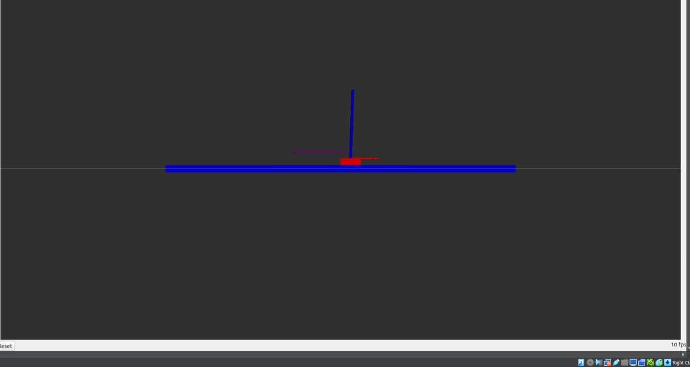
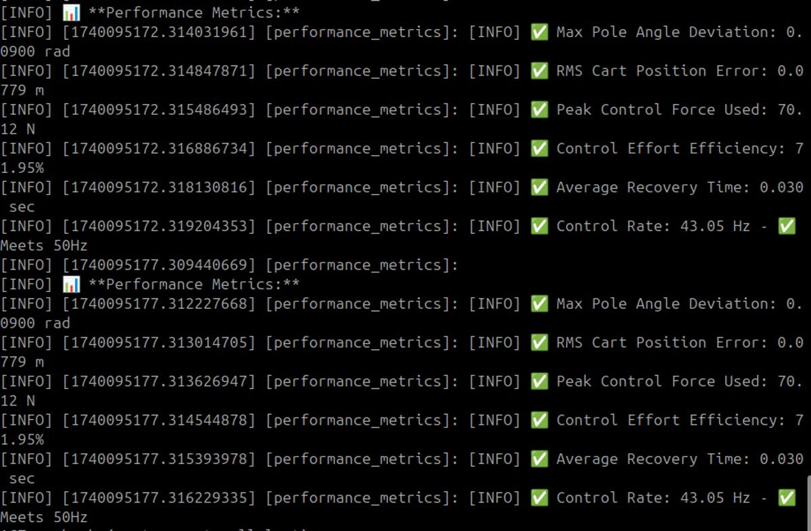
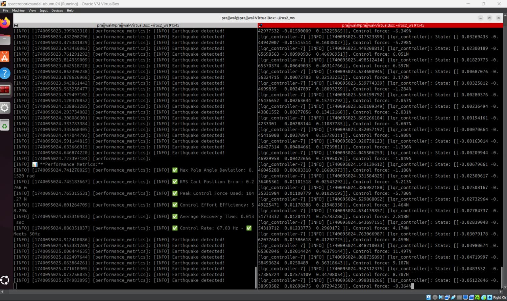

Balancing a Pendulum Through a Simulated Earthquake
A cart-pole has four states, one motor, and in this assignment an earthquake generator that never stops trying to knock it over. My job was to design and tune a Linear Quadratic Regulator that keeps the pole standing and keeps the cart on a ±2.5 m rail, and then back it up with logged numbers instead of a video that just looks steady. When I started, the controller threw the cart 3 m and hammered away at around 300 N. After tuning Q and R it held the pole within 0.09 rad and the cart within 7.8 cm RMS, never pushing harder than 70 N.

Four states, one motor, and the ground won't keep still.
The cart-pole is the classic underactuated system. Its state is [x, ẋ, θ, θ̇], the cart's position and speed plus the pole's angle and how fast it's swinging, but the only thing you can push on is the cart, sideways. Nothing turns the pole directly. Every fix to the pole has to be paid for by moving the cart, and the cart only has ±2.5 m of rail to spend. That's the whole challenge. Chase the angle too hard and the cart runs off the end, but protect the cart too much and the pole falls over.
The disturbance is what takes it past a textbook exercise. The earthquake generator pushes constantly with a force made of many sine waves added together, 15 N at base amplitude spread across 0.5 to 4.0 Hz, with random amplitudes and phases and Gaussian noise on top. It covers a wide band, never lets up and never repeats, so the controller never gets to settle down. It's fighting back the entire time.
B = [0, 1/M, 0, −1/(ML)]ᵀ M = m = 1.0 kg, L = 1.0 m
K = solve_continuous_are(A, B, Q, R), then u = −Kx control loop at 100 Hz
The controller linearizes around the upright position, solves the continuous algebraic Riccati equation for the best gain, and applies u = −Kx. So the real design work isn't in writing the controller at all. It's in deciding what best should mean, and that's all in Q and R.
Q and R are where the judgment calls live.
LQR minimizes ∫(xᵀQx + uᵀRu) dt. Q sets the price of drifting in each state and R sets the
price of pushing. The starting weights treated cart position as nearly free
(Q[0,0] = 1.0), cared only a little about the pole angle
(Q[2,2] = 10.0), and made force cheap (R = 0.1). The controller did
exactly what those prices told it to. It happily slid the cart 3 m and threw around 300 N
at the angle, because nothing made either of those expensive.
| Weight | Before | After | Intent |
|---|---|---|---|
| Q[0,0], cart position | 1.0 | 50.0 | make drifting expensive so the cart stays on the rail |
| Q[1,1], cart velocity | 1.0 | 5.0 | smooth the cart out and stop it darting around |
| Q[2,2], pole angle | 10.0 | 100.0 | correct tilt harder, since that is the main goal |
| Q[3,3], pole rate | 10.0 | 20.0 | calm fast swinging before it builds up |
| R, control effort | 0.1 | 0.1 | left alone, because a 4 Hz disturbance needs force in reserve |
What made the difference was raising cart position 50× at the same time as pole angle 10×. If I only raise the angle weight, the pole gets better and the cart wanders further. Raising both together is what keeps one steady without giving up the other. Q[3,3] is the quiet helper. Penalizing how fast the pole swings stops the wobble while it's still small, and that takes far less force than fixing it once it's big.
I logged the results instead of eyeballing them.
A separate performance_metrics node records the numbers that matter while the
earthquake is running: the worst pole tilt, RMS cart error, peak force, how efficiently the
force is used, recovery time and the control rate it actually achieved. Two runs from that
node tell the tuning story better than any plot could, one from partway through and one
from the final setup.
| Logged metric | Intermediate run | Final tuning |
|---|---|---|
| Max pole angle deviation | 0.1520 rad | 0.0900 rad (5.2°) |
| RMS cart position error | 0.2266 m | 0.0779 m |
| Peak control force | 104.27 N | 70.12 N |
| Control effort efficiency | 58.29% | 71.95% |
| Average recovery time | 0.013 s | 0.030 s |
| Control rate | 67.83 Hz | 43.05 Hz |
Compared with the untuned starting point the gap is even bigger. Peak force dropped from around 300 N to 70.12 N, and the cart's furthest trip went from about 3.1 m, which is off the end of the real rail, to about 1.1 m, well inside it. I should point out the last row, though. The final setup logs a lower control rate, so there's a genuine trade between how hard the gains work and how quickly the loop closes.


Metrics are as logged by the performance_metrics node in the repository. The before-tuning figures are from the assignment README.
Coverage planning on a first-order system.
Boustrophedon coverage navigator. Here a first-order system, turtlesim, is driven back and forth in a lawnmower survey pattern by a PD controller, and it's graded on cross-track error, meaning how far the robot drifts off the set path. The tuning splits into two separate loops. The linear gains decide how hard it drives down each row, and the angular gains decide how cleanly it turns at the ends. The final gains were Kp_linear = 10.0, Kd_linear = 0.1, Kp_angular = 5.0, Kd_angular = 0.2 with rows 1.0 unit apart, a strong proportional term for tracking and a little derivative damping so the corners don't overshoot. The reported average cross-track error came in under the 0.2 unit target.
Find two rocks, measure them, and land on the tall one.
The course finished with a PX4 SITL quadrotor, a downward camera and RGB-D sensing, flown into an unknown scene with two cylindrical rock formations, one 10 m tall and one 7 m. The mission was to search the area, find both rocks, estimate how wide they are and where they sit in the world, and land on top of the taller one, all while logging time and energy.
Picking a search pattern is the first real decision, and it's a trade between covering ground and learning fast. A spiral works well when the target is probably near the middle. A random walk suits a situation where you know nothing. Frontier-based exploration is best when a SLAM map is being built as you go, and a grid with a TSP route does well in cluttered spaces you partly know. For a closed arena with two targets guaranteed to be there, the boring answer wins. A lawnmower sweep with rows spaced by the camera's field of view is sure to cover everything, and its straight legs keep the aircraft steady enough to go straight into a careful descent. It's the same back and forth idea as the turtlesim assignment, now in three dimensions with a vehicle underneath it.
marker pose: OpenCV ArUco into solvePnP(intrinsics) plus PX4 odometry gives the world position
control: /fmu/in/offboard_control_mode · /fmu/in/trajectory_setpoint · /fmu/in/vehicle_command
Detection runs on the downward camera using its published intrinsics. The moment a marker
shows up during the survey, the rest of the sweep is dropped on the spot. The
marker's position in the world comes from combining solvePnP's translation vector
with the onboard odometry, and the vehicle moves in on position setpoints, hovers to settle,
and then descends. The mission used a 0.8 m marker, a 15 m
takeoff altitude, a 2.0 m survey step and a 0.2 m final
descent height. RTAB-Map handled the 3D reconstruction extension and exported both rocks as
a mesh.
The most useful part is where it went wrong. In every trial the coverage, detection, hover
and descent all worked, but the drone always touched down next to the marker instead
of on it, and that "always" is the clue. Random scatter would point to noise. An
offset that repeats in the same direction points to something systematic: the camera and
body frames not lining up, the tvec from solvePnP going through the
wrong transform into the world frame, or the depth estimate drifting as the marker fills
the view on the way down. That's a calibration and TF problem, not a gain tuning problem,
and being able to tell those apart is a skill worth having.
The cart-pole assignment above is documented with my own logged results in this repository. This challenge was an assignment everyone in the class did, and the trial footage shown here belongs to my classmate, credited above.
What I took away from it.
Optimal control is really about setting prices. The LQR itself is four lines of scipy. Whether the cart stayed on the rail came down entirely to how much I charged for drifting, tilting and pushing. Get Q wrong and you don't get a broken controller, you get one that does the wrong thing perfectly. With an underactuated system, every fix costs something somewhere else. No gain makes the pole better for free, there are only trades you pick on purpose. And measure before you tune. The metrics node is what turned "it looks stable" into 0.0900 rad and 70.12 N, and that's the difference between saying something works and showing it.